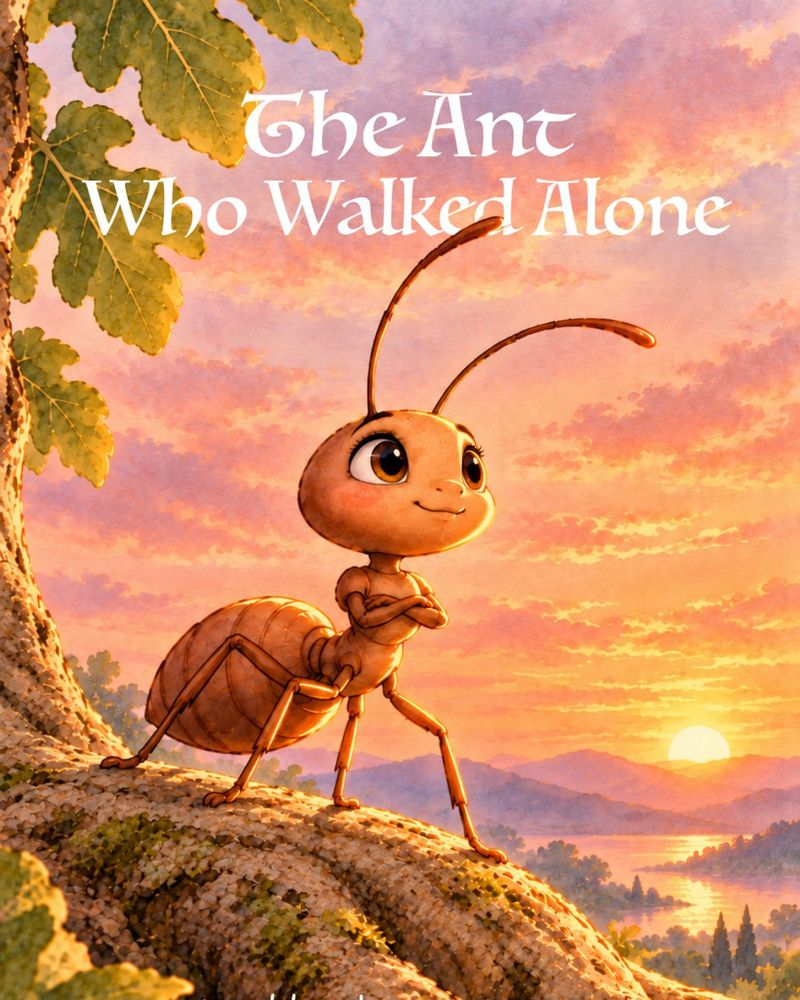
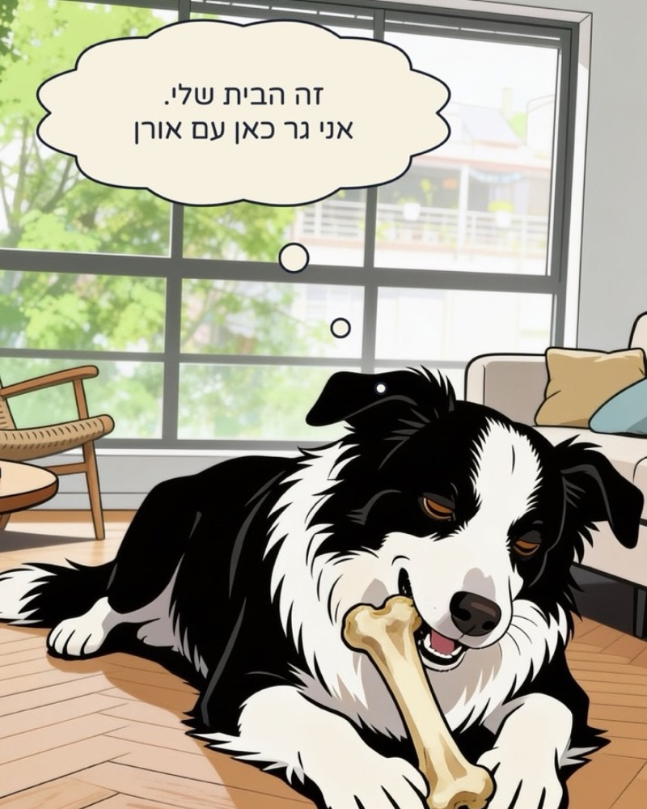
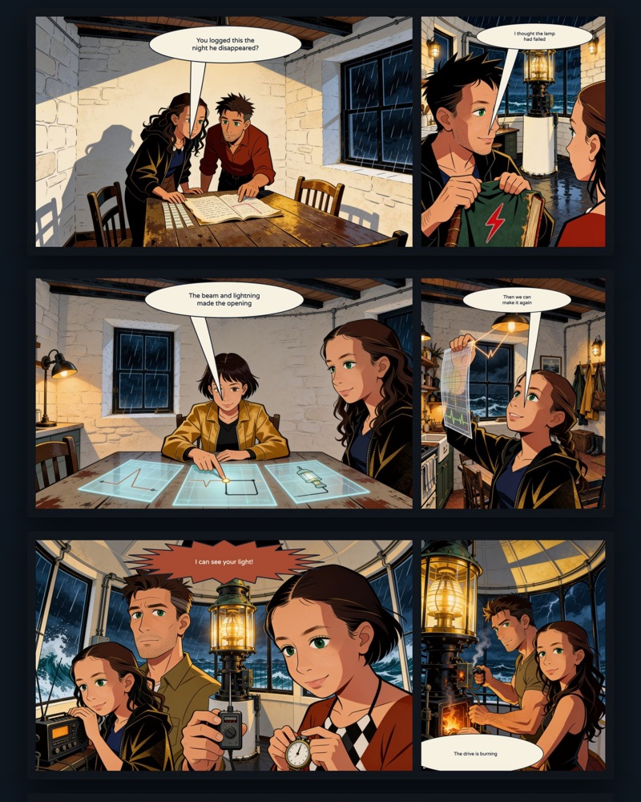
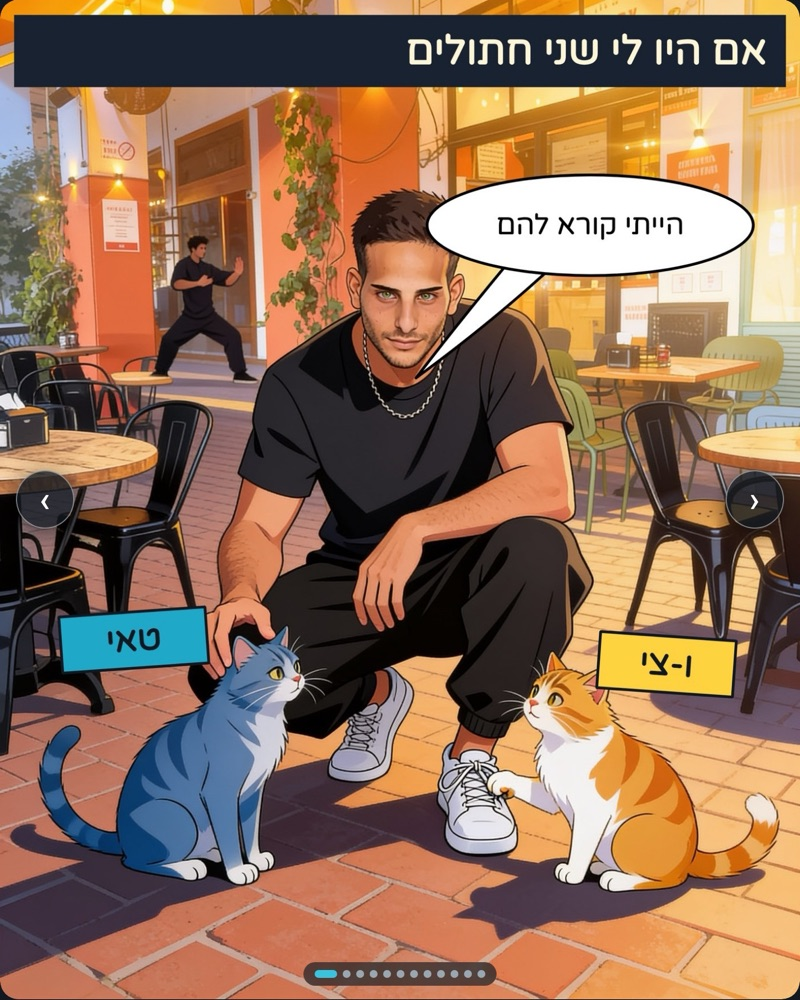

The Ant Who Walked Alone
Roi Werner · English · 17 pages
A story about unexpected lessons.

Berkovitz and Olive
Nero Yobar · Hebrew · 5 chapters
סיפור אהבה תל-אביבי בזמן מלחמת איראן

The Last Light
Nero Yobar · English · 6 chapters
A wild story about a lighthouse, a girl and a lost boy.

If I Had Cats
Nero Yobar · Hebrew · an ongoing series
פיד מתגלגל של הצעות לשמות של חתולים עירוניים. למי שצריך 🐈🐈⬛